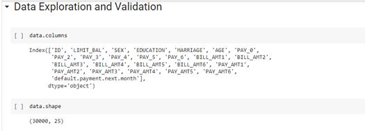
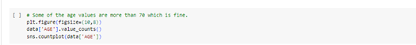
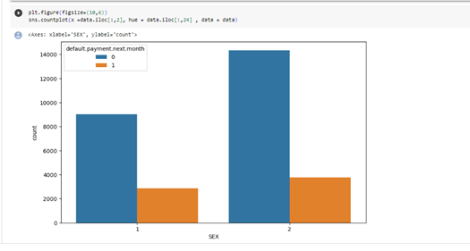
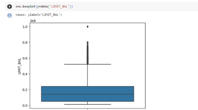
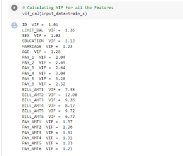
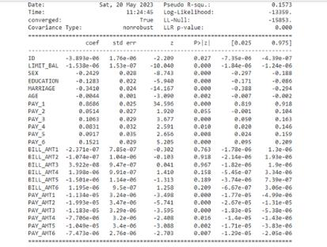
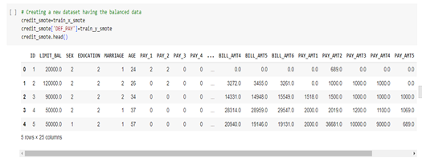

Thực Tiễn Ứng Dụng Học Máy Trong Kế Toán Và Kiểm Toán
(Original Title: Machine Learning Practices in Accounting and Auditing)
Trong kỷ nguyên công nghệ hiện nay, các ứng dụng Học máy (Machine Learning - ML) đang trở nên phổ biến từng ngày. Công trình nghiên cứu này cung cấp thông tin toàn diện về hiệu quả của các kỹ thuật ML trong quy trình kế toán cũng như kiểm toán. Để thu được các kết quả khách quan, nhiều thư viện ML mạnh mẽ trên nền tảng Python đã được khai thác triệt để, bao gồm Seaborn, Matplotlib, NumPy, Statsmodels và Scikit-learn. Trong phần mở đầu, mục đích và các mục tiêu nghiên cứu cụ thể được xác lập nhằm định hướng toàn bộ quy trình phân tích. Một mô hình học máy Hồi quy Logistic (Logistic Regression Machine Learning Model) hoàn chỉnh được xây dựng và kiểm thử từng bước trên bộ dữ liệu tài chính thực nghiệm 25 biến. Các nguồn tài liệu học thuật được phân tích sâu sắc trong phần tổng quan y văn, giúp người đọc nắm bắt đa chiều bối cảnh thực tiễn và nhận diện rõ vai trò của các thuật toán ML trong tự động hóa rà soát hợp đồng (Argus), kiểm tra toàn diện nhật ký chứng từ (Halo), cũng như vượt qua các rào cản về tâm lý thiên lệch nhận thức của kiểm toán viên. Bài báo đem lại bức tranh tri thức vững chắc cho việc ứng dụng công nghệ học máy trong các tổ chức kiểm toán và doanh nghiệp hiện đại.
Hãng nghiên cứu công nghệ hàng đầu thế giới Gartner Inc. khẳng định rằng: Để duy trì lợi thế cạnh tranh sống còn, các doanh nghiệp bắt buộc phải phân tích sâu sắc cách thức các công nghệ then chốt đang định hình lại toàn bộ hoạt động vận hành của mình. Doanh nghiệp sẽ đối mặt với rủi ro tụt hậu và bị đào thải nếu không chủ động khảo sát và áp dụng những công nghệ này. Học máy (Machine Learning) là một ví dụ tiêu biểu cho công nghệ chiến lược sử dụng trí tuệ nhân tạo. Nhờ vào những đột phá vượt bậc của học máy, rất nhiều công việc kế toán thủ công trước đây từng cần sự can thiệp của con người thì nay đã có thể được thực hiện với tốc độ tính bằng giây và độ chuẩn xác vượt trội bởi máy tính.
Không giống như các thuật toán dựa trên luật lệ tĩnh truyền thống (*Rule-based*), hệ thống học máy có khả năng tự động học hỏi từ dữ liệu, thích nghi với các mẫu hình mới và hoạt động với sự can thiệp tối thiểu từ người vận hành (Jordan & Mitchell, 2015). Nhờ đó, doanh nghiệp không chỉ tiết kiệm được chi phí nhân sự khổng lồ mà còn triệt tiêu các sai sót phát sinh từ yếu tố mệt mỏi của con người.
Sức ảnh hưởng của học máy lan tỏa mạnh mẽ vào mọi ngóc ngách của đời sống kinh tế, và ngành kiểm toán không phải là ngoại lệ. Năng suất kiểm toán, tỷ lệ sai sót, rủi ro kiểm toán và chi phí hợp đồng kiểm toán đều có thể được cải thiện vượt bậc. PricewaterhouseCoopers (PwC) đã chính thức công nhận tầm quan trọng của các học phần học máy nâng cao trong chương trình đào tạo kế toán bậc đại học, khẳng định rằng học máy là một kỹ năng AI cốt lõi mà bất kỳ kế toán viên và kiểm toán viên chuyên nghiệp nào trong kỷ nguyên số cũng bắt buộc phải thành thạo.
Học máy trong kế toán được phân thành hai trường phái chính:
1. Hệ thống Argus (Deloitte): Công nghệ học máy tự động quét, bóc tách và diễn giải các văn bản pháp lý phức tạp như hợp đồng thuê tài sản, hợp đồng công cụ tài chính phái sinh và hợp đồng mua bán hàng. Thuật toán tự động đọc hợp đồng thuê, trích xuất các điều khoản then chốt và hỗ trợ kiểm toán viên phân loại chính xác xem đó là thuê tài chính (Capital Lease) hay thuê hoạt động (Operating Lease), đồng thời phát hiện ngay các điều khoản bất thường đòi hỏi phán đoán nghề nghiệp cao.
2. Hệ thống Halo (PwC): Công cụ phân tích dữ liệu kiểm toán rà soát 100% toàn bộ các bút toán nhật ký chung (Journal Entries) của doanh nghiệp thay vì chỉ chọn mẫu ngẫu nhiên vài chục chứng từ như trước. Halo tự động phát hiện các bút toán bất thường: chứa từ khóa nhạy cảm, hạch toán vào ngày nghỉ cuối tuần hoặc nửa đêm, ghi nhận bởi người dùng không có thẩm quyền, hoặc các bút toán được cố tình chia nhỏ sát dưới hạn mức phê duyệt của ban giám đốc.
Việc đưa học máy vào kiểm toán vấp phải những thách thức lớn về an toàn dữ liệu khách hàng, tính đầy đủ và tính chính xác của dữ liệu đầu vào. Kiểm toán viên không thể tin tưởng mù quáng vào kết quả của máy móc mà phải kết hợp chặt chẽ với các chuyên gia an ninh mạng và nhà khoa học dữ liệu.
Đặc biệt, nghiên cứu chỉ ra 4 thiên lệch nhận thức tâm lý (Cognitive Biases) mà kiểm toán viên dễ mắc phải khi làm việc cùng hệ thống AI:
Nghiên cứu tiến hành thực nghiệm toàn diện trên bộ dữ liệu tài chính Default of Credit Card Clients Dataset gồm 25 thuộc tính quan trọng:
| Nhóm Thuộc Tính | Tên Biến Cụ Thể Trong Dữ Liệu | Ý Nghĩa Nghiệp Vụ Tài Chính - Kế Toán |
|---|---|---|
| Biến mục tiêu (Target) | default.payment.next.month |
1 = Khách hàng vỡ nợ/không thanh toán kỳ tới; 0 = Thanh toán đúng hạn. |
| Hạn mức & Nhân khẩu | LIMIT_BAL, SEX, EDUCATION, MARRIAGE, AGE |
Số tiền hạn mức cấp tín dụng, giới tính, trình độ học vấn, tình trạng hôn nhân và độ tuổi khách hàng. |
| Lịch sử trả nợ (6 tháng) | PAY_0, PAY_2, PAY_3, PAY_4, PAY_5, PAY_6 |
Tình trạng trả nợ từ tháng 4 đến tháng 9 (-1 = đúng hạn, 1 = trễ 1 tháng, 2 = trễ 2 tháng,...). |
| Số tiền hóa đơn (6 tháng) | BILL_AMT1 đến BILL_AMT6 |
Số dư nợ trên sao kê hóa đơn qua các kỳ kế toán liên tiếp. |
| Số tiền đã trả (6 tháng) | PAY_AMT1 đến PAY_AMT6 |
Số tiền thanh toán thực tế của khách hàng trong từng kỳ đối soát. |
Sử dụng thư viện pandas, seaborn và matplotlib để khảo sát cấu trúc phân phối dữ liệu:

df.isnull().sum() để quét toàn bộ 25 biến số tài chính, xác nhận không có giá trị khuyết thiếu trong bảng dữ liệu đầu vào.


sns.countplot(x='SEX', hue='default.payment.next.month') và phân bố theo trình độ học vấn (EDUCATION). Tỷ lệ vỡ nợ duy trì tương đối đồng nhất giữa nam và nữ nhưng có sự chênh lệch rõ nét theo trình độ học vấn.
Trong dữ liệu kế toán thực tế, các giao dịch có giá trị cực lớn đột biến (Extreme Outliers) thường làm sai lệch nghiêm trọng trọng số của mô hình hồi quy. Nghiên cứu áp dụng kỹ thuật lọc phân vị (Quantile Filtering) để loại bỏ 1% giá trị biên cực đoan của hạn mức tín dụng LIMIT_BAL và số tiền hóa đơn BILL_AMT.

1. Hệ số phóng đại phương sai (Variance Inflation Factor - VIF): Đa cộng tuyến giữa các biến số tiền hóa đơn liên tiếp (BILL_AMT1 đến BILL_AMT6) là rất nghiêm trọng. Quy tắc thực nghiệm: Giữ lại các biến có $VIF < 5$, loại bỏ các biến có $VIF \ge 5$ để tránh làm sai lệch dấu của hệ số hồi quy.
2. Kiểm định Wald Chi-Square: Đo lường mức độ đóng góp thống kê thực sự của từng biến độc lập đối với biến mục tiêu vỡ nợ, cho phép chọn lọc ra top các đặc trưng then chốt nhất (Top Ranking Features).

PAY_0 và LIMIT_BAL), loại bỏ các biến dư thừa không mang lại giá trị giải thích.
Mô hình được xây dựng song song qua thư viện thống kê học thuật statsmodels.api.Logit (để phân tích sâu hệ số $P > |z|$ và khoảng tin cậy) và thư viện thực thi tốc độ cao sklearn.linear_model.LogisticRegression.

| Chỉ Số Đánh Giá Mô Hình | Giá Trị Đạt Được Ban Đầu | Phân Tích Nghiệp Vụ Kiểm Toán & Quản Trị Rủi Ro |
|---|---|---|
| Độ chính xác tổng thể (Accuracy) | 81.0% (0.81) | Trông có vẻ ấn tượng trên lý thuyết, nhưng thực chất bị đánh lừa bởi số lượng khách hàng trả nợ đúng hạn chiếm đa số. |
| Độ đặc hiệu (Specificity - Lớp 0) | 97.0% (0.97) | Nhận diện cực kỳ chính xác các trường hợp trả nợ đúng hạn, hầu như không báo động nhầm. |
| Độ nhạy (Sensitivity / Recall - Lớp 1) | 24.0% (0.24) | RỦI RO CHÍ MẠNG: Mô hình bỏ sót tới 76% các trường hợp vỡ nợ thực tế! |
| F1-Score lớp vỡ nợ | 0.36 | Quá thấp do sự mất cân bằng dữ liệu nghiêm trọng trong tập huấn luyện. |
Để khắc phục triệt để tỷ lệ bỏ sót 76%, nghiên cứu tiến hành cân bằng lại tập dữ liệu (Handling Class Imbalance) bằng kỹ thuật lấy mẫu lại cân bằng (Balanced Resampling).

Để mở rộng kết quả thực nghiệm từ phòng lab ra bối cảnh thị trường kiểm toán thực tế, nghiên cứu đối chiếu trực tiếp với công trình khảo sát quy mô lớn của Fedyk, Hodson, Himick và Rovenskaya xuất bản trên tạp chí đỉnh cao Review of Accounting Studies (RAST):
Công trình nghiên cứu đã chứng minh một cách tường minh cả trên phương diện lý thuyết lẫn thực nghiệm lập trình Python rằng: Machine Learning không còn là một khái niệm xa vời mà đã trở thành công cụ thực chiến không thể thiếu trong kế toán và kiểm toán hiện đại.
Khuyến nghị then chốt dành cho giảng viên, sinh viên và kiểm toán viên: